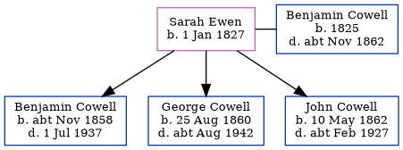

Sarah Cowell (née Ewen) 1827 -
[ Home ] | [ Calendar ] | [ Surnames Index ] | [ Errors ] | [ Family History ]Sarah Ewen, the wife of Benjamin Cowell (the first cousin four-times-removed on the mother's side of Nigel Horne), was born in Ramsgate, Kent, England on 1 Jan 18271, was baptised in St Lawrence, Thanet, Kent, England on 2 Sept 1827 and married Benjamin (a mariner with whom she had 3 children: Benjamin William, George Henry and John Charles) at St George's Church in Ramsgate on 26 Jul 18571.
During her life, she was living at Belle Vue Hill in Ramsgate on 7 Apr 18612 and at 2 Rodney Street in Ramsgate on 2 Apr 18713.
Children
- Benjamin William was born c. Nov 1858
- George Henry was born on 25 Aug 1860
- John Charles was born on 10 May 1862
Citations
- Kent, Canterbury Archdeaconry marriages 1538-1928 - Findmypast
- 1861 England, Wales & Scotland Census - Findmypast (was age 34 and the head of the household)
- 1871 England, Wales & Scotland Census - Findmypast (was age 42 and the wife of the head of the household)
Media
Kent, Canterbury Archdeaconry marriages 1538-1928 - GBPRS/CANT/M/97005490/2
1871 England, Wales & Scotland Census - GBC/1871/0014299387
England & Wales marriages 1837-2005 - BMD/M/1857/3/AM/000620/016
England Births & Baptisms 1538-1975 - R_885340637
Kent Baptisms - GBPRS/CANT/B/96401996
Family Tree
Map
Generated by ged2site. Last updated on Jul 3, 2024
Known Issues
Baptism information not used to determine a parent
Listed in the residence for 7 Apr 1861, but spouse Benjamin Cowell is not